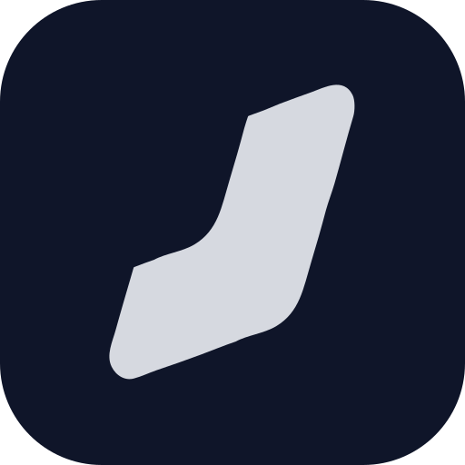

RuimteTerminals, agents and browsers on one infinite canvas.
Put a shell, a coding agent and the page it is working on next to each other. Group them per project, link them so an agent can read what you point at, and see at a glance who needs you.
A 30-second tour is on its way.
One canvas, every project
Terminals, chats and browser windows are nodes. Group them, collapse a group, or give one its own git worktree.
Agents that see the room
Draw an edge from a terminal or a note into an agent and it can read it. Status comes from the CLIs' own hooks, so the canvas shows who is running, who is waiting on you and who is done.
Local first
A daemon on your machine owns the sessions; closing the window never ends a shell. Reach it from another machine after pairing once. No accounts, no telemetry.